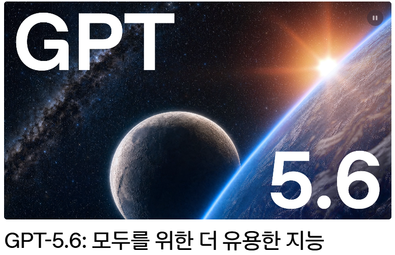
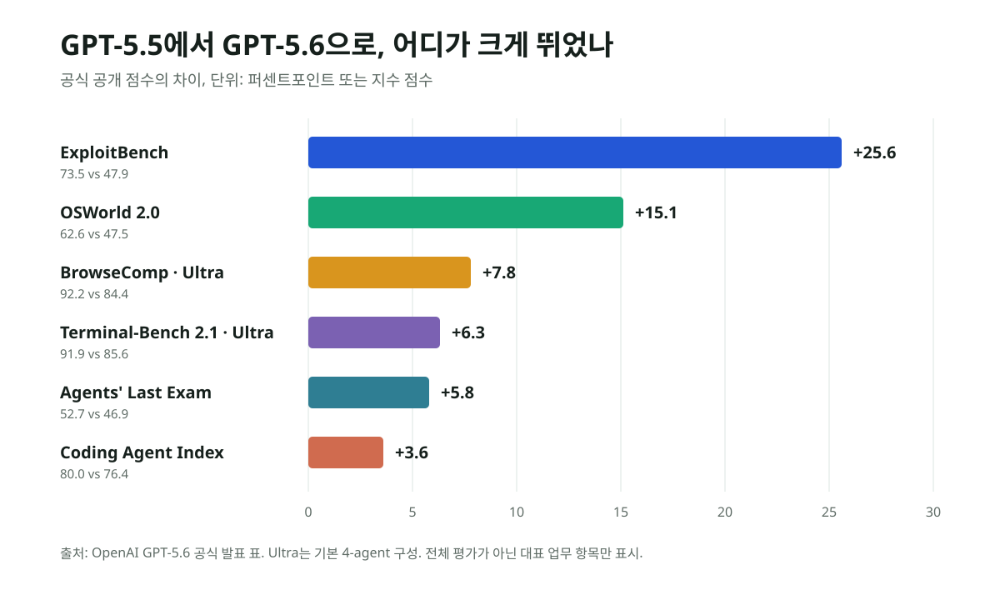
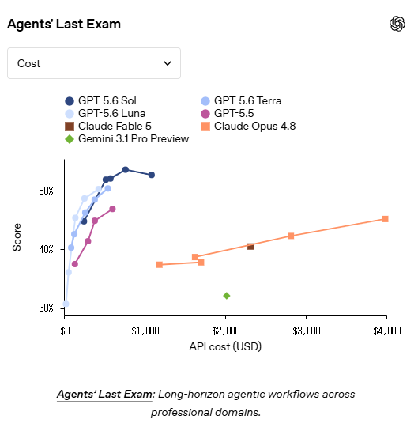
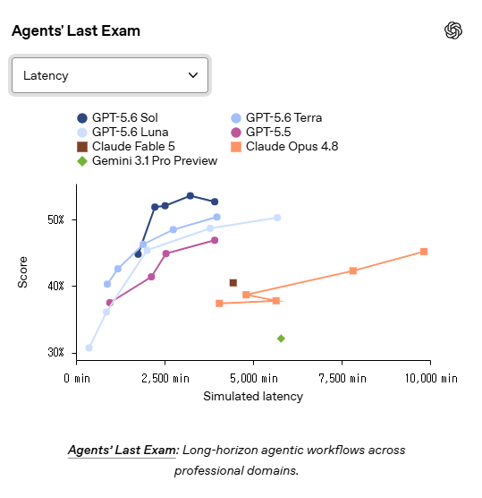
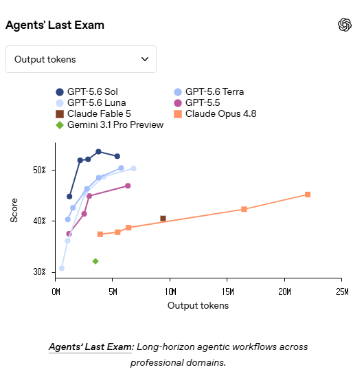

GPT-5.6 드디어 공개: Sol·Terra·Luna와 Ultra가 바꾼 것
이번 업데이트의 진짜 변화는 답변 점수가 조금 오른 데 있지 않다. GPT-5.6은 모델을 세 단계로 나누고, 어려운 업무에서는 여러 에이전트를 병렬로 움직이며, 더 적은 토큰과 시간으로 끝까지 결과물을 만드는 방향을 전면에 세웠다.

핵심 요약
한 모델이 아니라, 업무 강도에 맞춘 세 모델과 두 개의 상위 모드다
Sol은 최고 성능, Terra는 일상 업무의 균형, Luna는 속도와 비용을 맡는다. 여기에 Sol의 max는 더 오래 검토하고, ultra는 기본 네 개 에이전트를 병렬로 조율한다. ChatGPT, Codex, API에 2026년 7월 9일부터 순차 배포됐다.
왜 오늘의 메인 뉴스인가
OpenAI는 6월 26일 정부 요청에 따라 제한된 파트너만 참여하는 프리뷰를 시작했다. 이번 7월 9일 발표는 그 과거 프리뷰를 재포장한 것이 아니라, ChatGPT·Codex·API 전반의 일반 제공으로 넘어간 사건이다. Reuters는 공개 시점과 세 모델 구성을, Axios는 GPT-5.6과 ChatGPT Work의 동시 출시 및 Ultra의 병렬 위임 구조를 각각 확인했다.
Sol·Terra·Luna는 무엇이 다른가
| 모델 | 역할 | 입력 / 100만 토큰 | 출력 / 100만 토큰 |
|---|---|---|---|
| GPT-5.6 Sol | 최고 성능, 복잡한 코딩·전문 업무 | $5 | $30 |
| GPT-5.6 Terra | 일상 업무와 비용의 균형 | $2.50 | $15 |
| GPT-5.6 Luna | 가장 빠르고 저렴한 대량 처리 | $1 | $6 |
이름만 다른 미니 모델 세트가 아니다. OpenAI는 Sol·Terra·Luna를 앞으로도 각자의 주기로 발전하는 지속적인 성능 계층이라고 설명한다. 사용자 입장에서는 “가장 좋은 모델 하나”를 고르는 문제보다, 업무의 가치와 시간·비용을 맞추는 일이 더 중요해졌다.
얼마나 강력해졌나: GPT-5.5 대비 상승폭

가장 눈에 띄는 변화는 컴퓨터 사용과 사이버 평가다. OSWorld 2.0은 GPT-5.5의 47.5%에서 Sol 62.6%로 올랐고, ExploitBench는 47.9%에서 73.5%로 상승했다. 장시간 전문 업무를 보는 Agents' Last Exam은 46.9%에서 52.7%로, 코딩 에이전트 종합 지수는 76.4에서 80.0으로 높아졌다.
사용자가 보낸 세 그래프는 무엇을 말하나
아래 세 화면은 같은 Agents' Last Exam 결과를 비용, 지연시간, 출력 토큰이라는 서로 다른 축으로 본 것이다. 핵심은 최고 점수 하나가 아니라 점수-비용-시간의 전선이 동시에 이동했는가다. GPT-5.6 Sol의 점들은 경쟁 모델보다 높은 점수 구간을 더 낮은 비용과 더 적은 지연·출력 토큰으로 접근하는 모양을 보인다.



Ultra는 단순히 더 오래 생각하는 모드가 아니다
max는 한 모델이 더 오래 탐색하고 검토하도록 계산 시간을 늘린다. ultra는 구조가 다르다. 기본적으로 네 에이전트가 병렬 작업 흐름을 맡고, 루트 에이전트가 결과를 종합한다. OpenAI 표에서 BrowseComp는 Sol 90.4%에서 Ultra 92.2%, Terminal-Bench 2.1은 88.8%에서 91.9%, SEC-Bench Pro는 71.2%에서 74.3%로 올라간다.
대가는 분명하다. 병렬 에이전트의 모든 토큰이 합산되므로 사용량이 커질 수 있다. Ultra는 이메일 한 줄이나 단순 요약을 위한 모드가 아니라, 조사·코딩·검증을 동시에 돌릴 가치가 있는 고난도 업무에 맞는다.

반대 해석: 모든 평가를 압도한 것은 아니다
“GPT-5.6이 모든 면에서 무조건 1등”이라고 쓰면 공식 표와도 맞지 않는다. Artificial Analysis Intelligence Index v4.1에서는 Sol 58.9가 Claude Fable 5의 59.9보다 1점 낮다. FrontierMath Tier 4에서도 Sol 83.0%가 Fable 87.8%에 뒤지고, Toolathlon은 Sol 58.0%가 Fable 61.7%보다 낮다.
따라서 더 정확한 결론은 이렇다. GPT-5.6의 강점은 모든 단일 시험의 절대 1위가 아니라, 코딩·컴퓨터 사용·장시간 전문 업무에서 높은 성능과 비용·시간 효율을 함께 끌어올린 데 있다. 특히 실제 업무에서 모델이 끝까지 도구를 사용하고 결과물을 다듬는 능력이 이번 세대의 중심이다.
한국 독자에게 미치는 영향
개발자는 Sol을 항상 고정하기보다 Terra와 Luna를 작업 큐에 섞어 비용을 관리할 수 있다. 기업은 문서·스프레드시트·브라우저 자동화의 완성도가 올라가는 만큼, 파일 접근권·외부 전송·승인 절차를 더 구체적으로 설계해야 한다. 사이버 성능의 큰 상승은 방어 업무에는 기회지만, 고위험 기능에 신원 확인과 강화된 계정 보안이 붙는 이유이기도 하다.
출처와 확인 링크
읽을 때 주의할 점
OpenAI는 순차 배포를 안내했다. 독자의 계정에서 Sol·Terra·Luna, Max·Ultra가 모두 보이지 않더라도 즉시 오류로 단정하기 어렵다. 가격은 API 정가이며 ChatGPT 구독 한도와는 별개다. 사이버·생명과학 관련 수치는 평가 환경의 조건을 함께 봐야 한다.